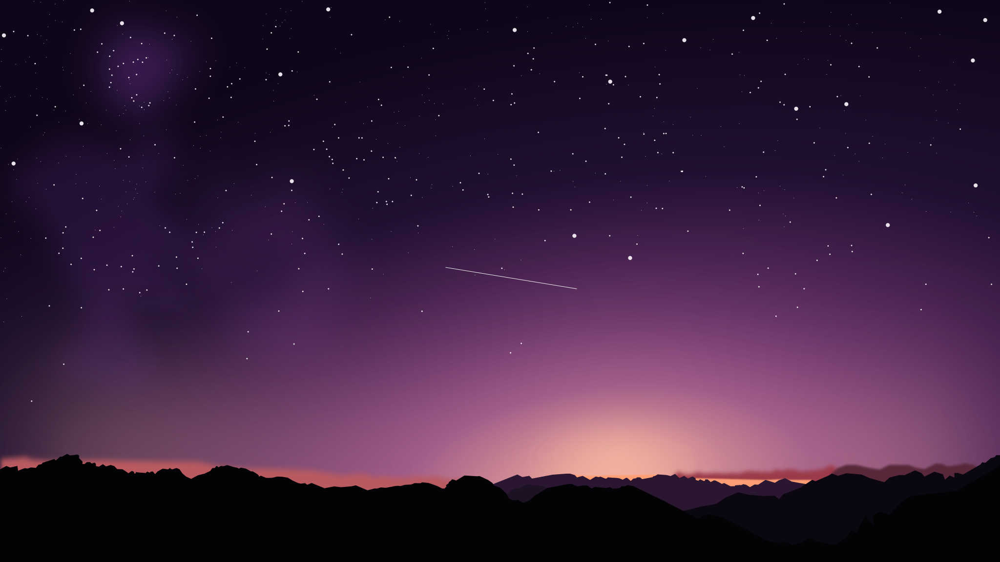

Night sky illustration

I like how stargazing mixes curiosity and patience: you can learn constellations, understand seasons, and notice patterns over time.
On clear nights, a quick walk away from bright lights can make a big difference.
Jump to the YouTube video Open the AI web appStargazing: a simple hobby with a big sky
This scratch page is about something that fascinates me: looking up at the night sky. It also demonstrates core HTML/CSS features: nested lists, an on-page anchor, a custom background, an image, an embedded YouTube video, and a live embedded Tableau visualization.
What I bring to this
-
Pick a spot
- Low light pollution (darker skies)
- Clear horizon (fewer trees/buildings)
- Comfort + safety
-
Bring basics
- Warm layers (it gets colder than you think)
- Phone with a red-light mode (optional)
- Binoculars (a great first “upgrade”)
-
Stay curious
- Learn one constellation at a time
- Track what you saw (date, sky conditions)
On page anchor demo: Back to top.